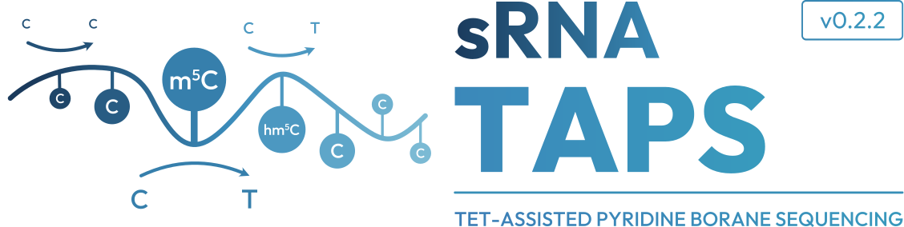

sRNA-TAPS detects 5-methylcytosine and 5-hydroxymethylcytosine in miRNA, tRNA, rRNA, snoRNA and more, using TET-assisted pyridine borane sequencing on human samples (GRCh38).
TET enzymes oxidise 5mC and 5hmC to 5-carboxylcytosine (5caC), marking modified bases for conversion.
Pyridine borane reduces 5caC to dihydrouracil (DHU), which is read as T during PCR amplification.
Unmodified cytosines remain as C. Only 5mC and 5hmC appear as T in the sequencing reads.
Inverse of bisulfite sequencing. In bisulfite, unmodified C converts to T and 5mC is protected. In TAPS, modified C converts to T and unmodified C is protected — making short RNA reads far easier to align.
Every design decision accounts for the specific challenges of short, strand-specific, multimapping RNA molecules.
miRNA, tRNA, rRNA, snoRNA, snRNA, piRNA, lncRNA — each processed separately with biotype-appropriate coverage thresholds.
dbSNP variants, cell-line-specific SNPs from no-treat BAMs, and heterozygosity detection — all applied before any C→T counting.
Reads with XA:i:N tags contribute 1/N to each locus, preventing inflation at tRNA gene copies and rRNA repeats.
R-generated PDF, PNG, and SVG figures at 300 dpi — QC, biotype composition, modification rates, benchmarking, and sequence logos.
Built-in comparison against rastair, asTair, and Bismark with concordance heatmaps and Pearson correlation at shared sites.
rastair is run in both CpG-only and all-context mode — producing identical results, proving it cannot detect the non-CpG m5C sites that dominate tRNA, rRNA, and miRNA biology.
FASTQ simulator with accurate TAPS chemistry — 9 samples, 4 biotypes, seeded m5C positions for end-to-end pipeline validation.
Three sample conditions are required to separate genuine m5C signal from chemistry background and sequencing noise.
Full TAPS chemistry. Both 5mC and 5hmC are oxidised by TET to 5-carboxylcytosine (5caC), reduced to dihydrouracil (DHU) by pyridine borane, and subsequently read as T during PCR amplification. This is your signal condition.
No TET oxidation. Pyridine borane converts unprotected cytosines non-specifically, and any C→T signal in these samples represents chemistry background. Used for δ score calculation.
Untreated baseline. C→T at this level reflects sequencing errors and SNPs. Used to build the cell-line SNP blacklist.
The delta (δ) score = treat_mod_rate − pb_Ctrl_mod_rate. Subtracting the pb_Ctrl background isolates only TET-dependent signal, removing both global chemistry noise and sequence-context-specific biases.
Available on bioconda, PyPI, and from source. Conda is recommended for automatic dependency resolution.
Run the synthetic test dataset to validate your installation, then point the pipeline at your own data.